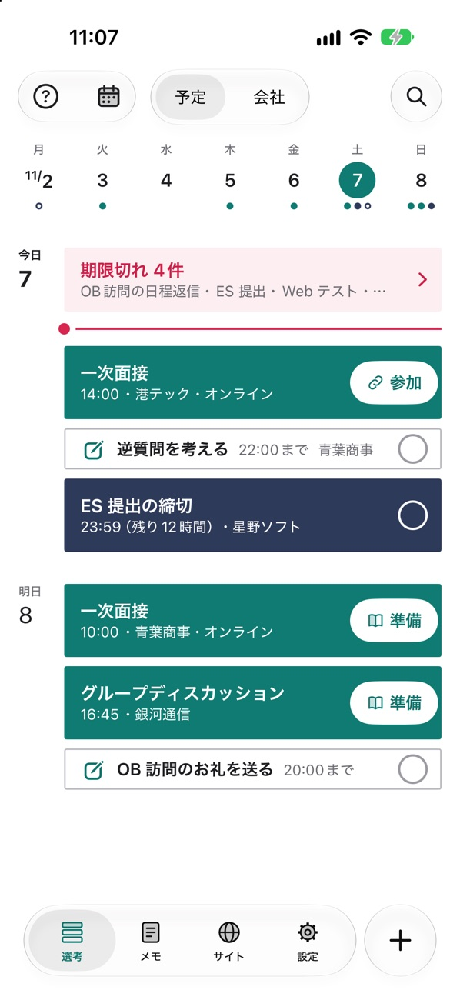
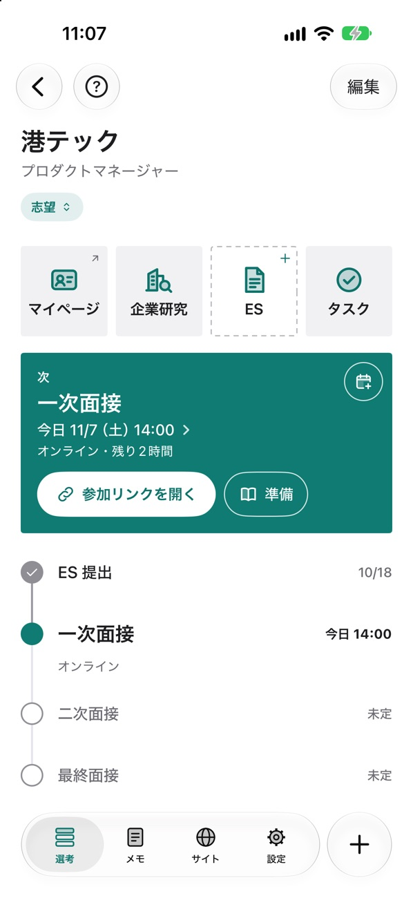
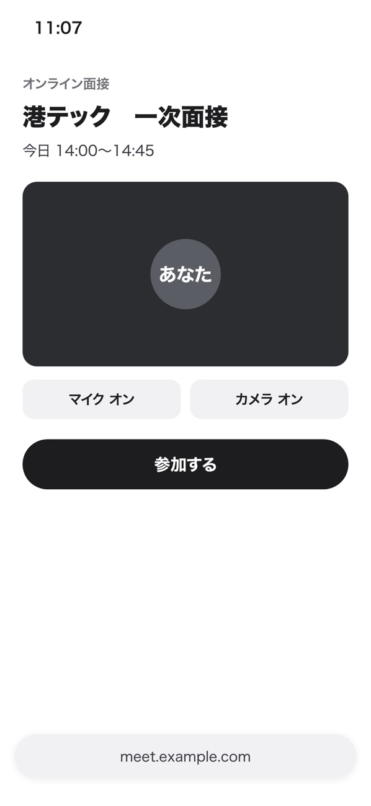
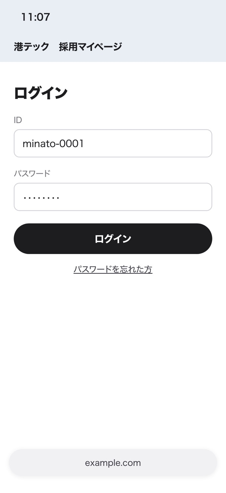
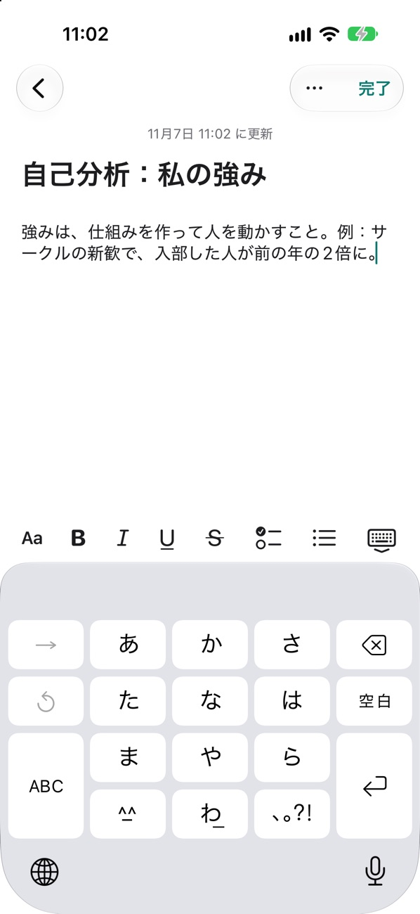
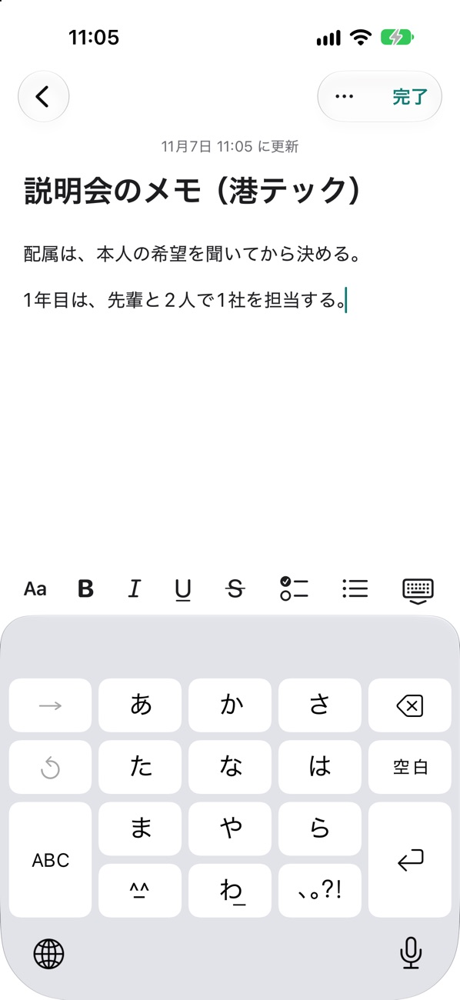
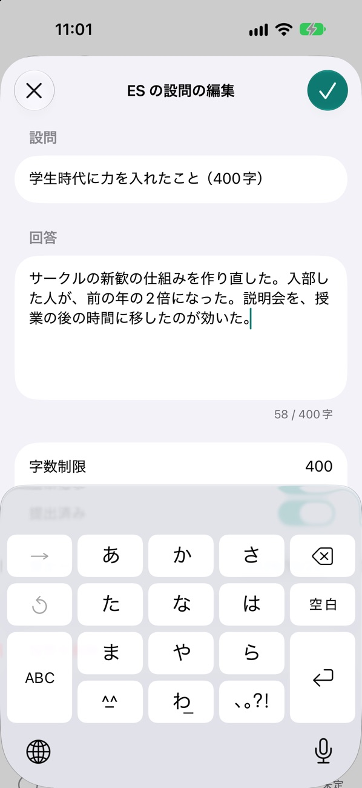
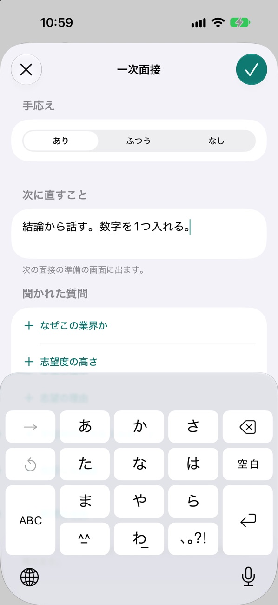

就活Hub iPhone アプリ
散らばってた予定が、
1画面に。

メール・マイページ・メモに散らばった締切と面接を、日付順の予定表にまとめます。
App Store で無料ダウンロード無料・ログインなし・広告なし・iOS 26 以上
次なんの選考？
進捗は？

すべて見れます。
会社のページを開くと、いちばん上に次の予定。その下に、ES 提出から最終面接までの流れが並びます。
参加リンク、どこだっけ。
マイページ、どこだっけ。

予定表の「参加」から、そのまま参加ページへ。

会社のページの「マイページ」から、ログインへ。ID も控えておけます。
もう迷わせません。
参加ページとマイページの画面はイメージです。
自己分析、メモ、ES、振り返り。
すべてできます。




横にスワイプ
安心して使えるように
ログインなしデータは自分の iCloud に保存し、同じ Apple Account の iPhone 同士で同期します。
無料いまの版は、すべての機能を無料で使えます。広告もありません。
iPhone で読み取り貼り付けたメールの読み取りは、iPhone の中で行います。
Web版から移れますWeb版の「エクスポート（JSON）」を、アプリの取り込みで選びます。
あなたの就活を、
もっとスムーズに。
就活Hub
App Store で無料ダウンロード
無料・ログインなし・広告なし・iOS 26 以上